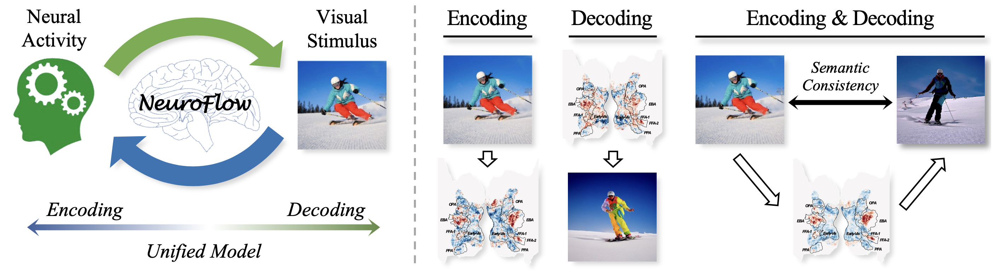
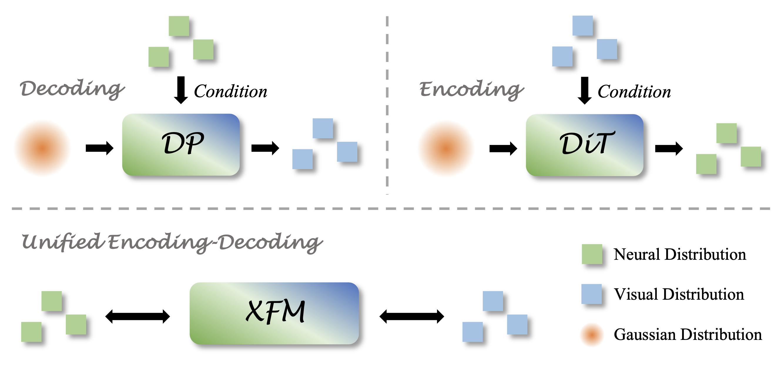
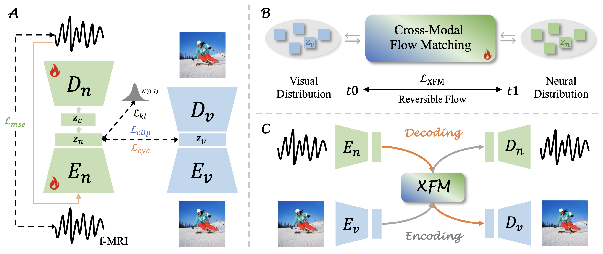

Motivation Illustration: A central challenge in visual encoding or decoding lies in cross-modal alignment that aims to establish a precise mapping between neural and visual distributions. Early methods relied on simple linear regressions to approximate the unidirectional relationship, which limited their ability to capture complex semantic correspondences. Recent approaches introduced nonlinear mappings using Diffusion Transformer (DiT) or Diffusion Prior (DP) under generative objectives, operating by conditioning Gaussian noise on one modality (e.g., neural or visual latent distribution) and iteratively guiding it toward the target distribution. However, such conditional noise-to-data pipelines still treat encoding and decoding as separate processes. In contrast, our proposed XFM establishes continuous and reversible flows directly between the neural and visual distributions, achieving a unified framework for encoding and decoding.

Overview of NeuroFlow. Stage-1 (A): NeuroVAE introduces probabilistic learning to model neural variability and constrains the latent space with visual semantics for consistent image-to-fMRI synthesis. Stage-2 (B): XFM unifies encoding and decoding processes by learning a time-dependent, reversible flow between empirical visual and neural latent distributions. Stage-3 (C): Encoding and decoding are performed within a single model at inference, where reversing the temporal direction naturally transitions between the two processes.